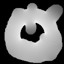
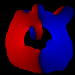
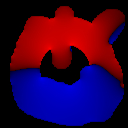
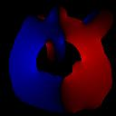
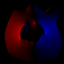
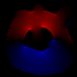

atlc's Options.atlc supports a few options on the command line. All except the -v option, require something to follow them, which is usually a number, but in the case of the -d option, it is more complex. The available options can be seen if you run atlc without any arguments. As of version 3.0.0, these options are:
Usage: atlc [-v][-c cutoff][-d rrggbb=Er][-F appendfile]
[-i factor][-r rate_multiplier][-t THREADs] bitmap
options are:
-c cutoff
where 'cutoff' sets the cutoff criteria - see html docs or man page.
-d rrggbb=Er
where the colour rrggbb (in hex) is a (d)ielectric of permittivity Er.
-F appendfile
appends all data to 'appendfile'.
-i factor
which lightens (factor > 2.0) or darkens (1.0 < factor < 2.0) output bitmaps.
-t threads.
Where 'threads' is the number of threads to use (normally best set to
the number of cpus).
-r rate_multiplier
where 'rate_multiplier' sets the rate multipler (called r in source code)
-v
Verbose option. Print extra data to stdout.
Unless you compile with multi-processor support, the -t option will not be seen. These options, while on the whole fairly self-explanatory, are described below.
-c option. For example, here are two runs of the same problem, one with the cutoff at the default (0.0001=0.01%) and anothe with the cutoff changed to a larger value (0.1 or 10%).
% atlc -v 200-Ohm-401.bmp 200-Ohm-401.bmp Er= 1.0000 C= 22.2637 pF/m L= 499.7606 nH/m Zo= 149.8245 Ohms v= 2.99792e+08 m/s v_f= 1.0000 VERSION= 3.0.1 200-Ohm-401.bmp Er= 1.0000 C= 19.4557 pF/m L= 571.8880 nH/m Zo= 171.4477 Ohms v= 2.99792e+08 m/s v_f= 1.0000 VERSION= 3.0.1 200-Ohm-401.bmp Er= 1.0000 C= 18.2779 pF/m L= 608.7418 nH/m Zo= 182.4962 Ohms v= 2.99792e+08 m/s v_f= 1.0000 VERSION= 3.0.1 200-Ohm-401.bmp Er= 1.0000 C= 17.6339 pF/m L= 630.9716 nH/m Zo= 189.1605 Ohms v= 2.99792e+08 m/s v_f= 1.0000 VERSION= 3.0.1 200-Ohm-401.bmp Er= 1.0000 C= 17.2563 pF/m L= 644.7799 nH/m Zo= 193.3001 Ohms v= 2.99792e+08 m/s v_f= 1.0000 VERSION= 3.0.1 200-Ohm-401.bmp Er= 1.0000 C= 17.0244 pF/m L= 653.5612 nH/m Zo= 195.9327 Ohms v= 2.99792e+08 m/s v_f= 1.0000 VERSION= 3.0.1 200-Ohm-401.bmp Er= 1.0000 C= 16.8772 pF/m L= 659.2639 nH/m Zo= 197.6423 Ohms v= 2.99792e+08 m/s v_f= 1.0000 VERSION= 3.0.1 200-Ohm-401.bmp Er= 1.0000 C= 16.7812 pF/m L= 663.0335 nH/m Zo= 198.7724 Ohms v= 2.99792e+08 m/s v_f= 1.0000 VERSION= 3.0.1 200-Ohm-401.bmp Er= 1.0000 C= 16.7174 pF/m L= 665.5623 nH/m Zo= 199.5306 Ohms v= 2.99792e+08 m/s v_f= 1.0000 VERSION= 3.0.1 200-Ohm-401.bmp Er= 1.0000 C= 16.6744 pF/m L= 667.2796 nH/m Zo= 200.0454 Ohms v= 2.99792e+08 m/s v_f= 1.0000 VERSION= 3.0.1 200-Ohm-401.bmp Er= 1.0000 C= 16.6450 pF/m L= 668.4575 nH/m Zo= 200.3985 Ohms v= 2.99792e+08 m/s v_f= 1.0000 VERSION= 3.0.1 200-Ohm-401.bmp Er= 1.0000 C= 16.6248 pF/m L= 669.2723 nH/m Zo= 200.6428 Ohms v= 2.99792e+08 m/s v_f= 1.0000 VERSION= 3.0.1 200-Ohm-401.bmp Er= 1.0000 C= 16.6107 pF/m L= 669.8398 nH/m Zo= 200.8129 Ohms v= 2.99792e+08 m/s v_f= 1.0000 VERSION= 3.0.1 200-Ohm-401.bmp Er= 1.0000 C= 16.6008 pF/m L= 670.2371 nH/m Zo= 200.9320 Ohms v= 2.99792e+08 m/s v_f= 1.0000 VERSION= 3.0.1 200-Ohm-401.bmp Er= 1.0000 C= 16.5939 pF/m L= 670.5166 nH/m Zo= 201.0158 Ohms v= 2.99792e+08 m/s v_f= 1.0000 VERSION= 3.0.1 200-Ohm-401.bmp Er= 1.0000 C= 16.5890 pF/m L= 670.7138 nH/m Zo= 201.0750 Ohms v= 2.99792e+08 m/s v_f= 1.0000 VERSION= 3.0.1 200-Ohm-401.bmp Er= 1.0000 C= 16.5856 pF/m L= 670.8533 nH/m Zo= 201.1168 Ohms v= 2.99792e+08 m/s v_f= 1.0000 VERSION= 3.0.1 200-Ohm-401.bmp Er= 1.0000 C= 16.5832 pF/m L= 670.9520 nH/m Zo= 201.1464 Ohms v= 2.99792e+08 m/s v_f= 1.0000 VERSION= 3.0.1 200-Ohm-401.bmp Er= 1.0000 C= 16.5814 pF/m L= 671.0220 nH/m Zo= 201.1673 Ohms v= 2.99792e+08 m/s v_f= 1.0000 VERSION= 3.0.1 200-Ohm-401.bmp Er= 1.0000 C= 16.5802 pF/m L= 671.0714 nH/m Zo= 201.1821 Ohms v= 2.99792e+08 m/s v_f= 1.0000 VERSION= 3.0.1 200-Ohm-401.bmp Er= 1.0000 C= 16.5802 pF/m L= 671.0714 nH/m Zo= 201.1821 Ohms v= 2.99792e+08 m/s v_f= 1.0000 VERSION= 3.0.1Now here is a run with the cutoff set to a much larger value. atlc will iterate less and so give a less accurate answer quickly.
% atlc -v -c 0.1 200-Ohm-401.bmp 200-Ohm-401.bmp Er= 1.0000 C= 22.2637 pF/m L= 499.7606 nH/m Zo= 149.8245 Ohms v= 2.99792e+08 m/s v_f= 1.0000 VERSION= 3.0.1 200-Ohm-401.bmp Er= 1.0000 C= 19.4557 pF/m L= 571.8880 nH/m Zo= 171.4477 Ohms v= 2.99792e+08 m/s v_f= 1.0000 VERSION= 3.0.1 200-Ohm-401.bmp Er= 1.0000 C= 18.2779 pF/m L= 608.7418 nH/m Zo= 182.4962 Ohms v= 2.99792e+08 m/s v_f= 1.0000 VERSION= 3.0.1 200-Ohm-401.bmp Er= 1.0000 C= 18.2779 pF/m L= 608.7418 nH/m Zo= 182.4962 Ohms v= 2.99792e+08 m/s v_f= 1.0000 VERSION= 3.0.1-d rrggbb=Er
-d option to atlc, so that it understands this brownish colour is a dielectric with a permittivity of 3.0, like this% atlc -d654D65=3.0 enclosed-microstrip.bmp % atlc -d654D65=3.0 enclosed-microstrip.bmp enclosed-microstrip.bmp Er= MIXED C= 68.0545 pF/m L= 345.145352 nH/m Zo= 71.215160 Ohms v= 206333823.992669 m/s v_f= 0.688256 VERSION=3.0.0If instead the permittivity was 300, not 3, we could indicate this to atlc. We would expect the capacitance to rise a lot and Zo to fall a lot.
% atlc -d654D65=300 enclosed-microstrip.bmp enclosed-microstrip.bmp Er= MIXED C= 5162.48 pF/m L= 320.454031 nH/m Zo= 7.878680 Ohms v= 24585992.507328 m/s v_f= 0.082010 VERSION=3.0.0-f appendfile
atlc -F results_from_all_tests.txt test123a.bmp
atlc equates field strength to gray levels. The last of these, are user defineaable in atlc. Setting the factor > 2 lightens the images, but setting it between 1 and 2 lightens them. Note, the factor of 2 may be changed in the header file, like this
#define IMAGE_FIDDLE_FACTOR 2.0It is possible the user may wish to change the default. If this is done, the programme will always show the default, if ran with no filename. ie
% atlc
| E | Ex | Ey | |
| light (factor = 4) |  |  |  |
| default (factor = 2.0) |  | ||
| dark (factor = 1.1) |  |  |
atlc, if the images are too light or dark. It would be more sensible to have a sepparate programme that is able to generate the bitamps quickly from the binary files. A programme with a name something like bin2bmp may be added later to do this. Note also that the the -i image_fiddle_factor will be replaced with a -g gamma option later, when a more scientific method is developed for this. The current method really is a fiddle!!
--with-threads option. One this is done, the programme will be optimised to use 2 cpus. If you have more than 2, you might want to use the -t option. atlc that has not be compiled with multi-processor support, it will exit with an error message. atlc is written and supported by Dr. David Kirkby (G8WRB) It it issued under the GNU General Public License
{kind=link}